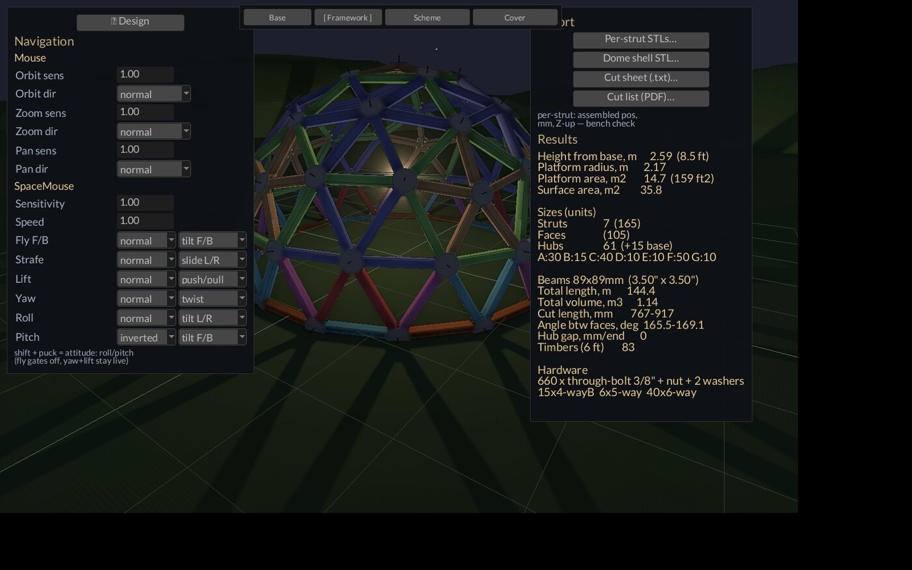
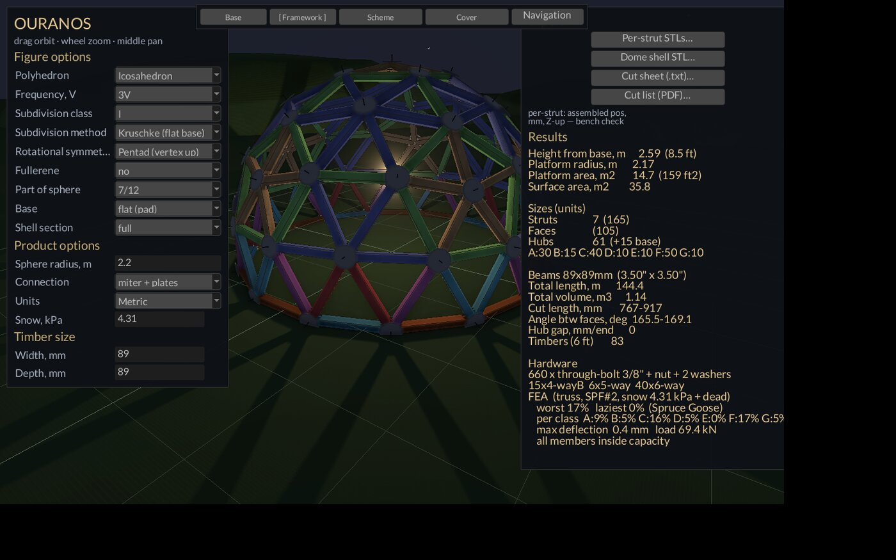
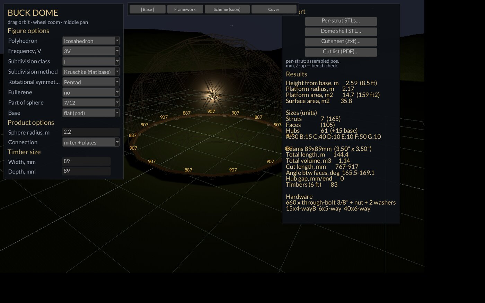
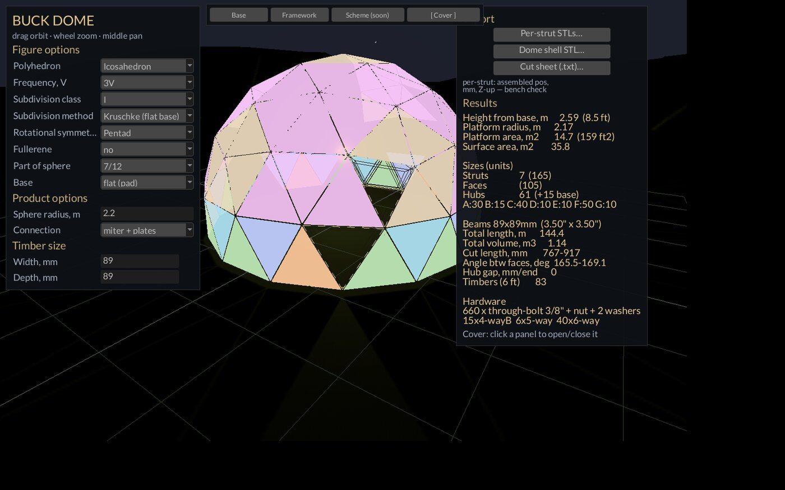
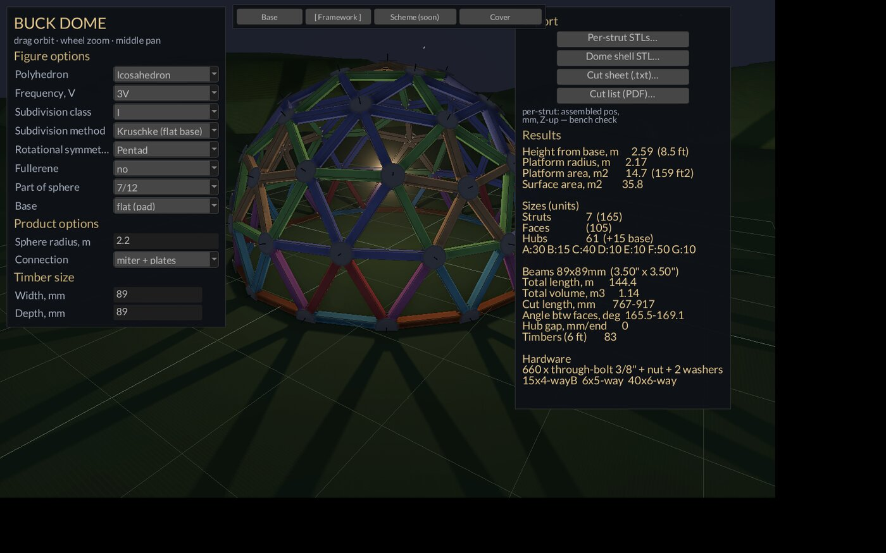
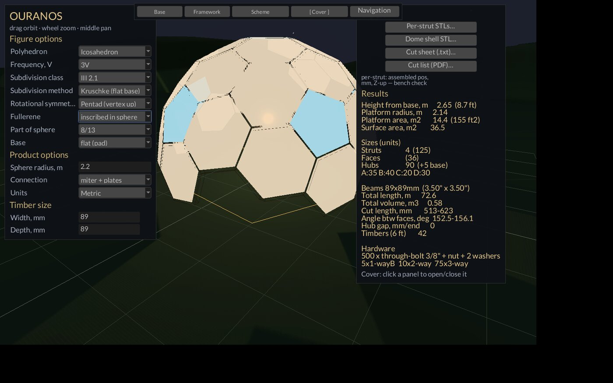

OURANOS
Ouranos is the primordial Greek sky — the dome itself, arched over the world. The module was "Buck Dome" (after Buckminster Fuller) until it earned a proper noun. ATLAS, the in-repo FEA, is the titan who holds up Ouranos: the load-bearer holds up the sky-dome, the solver holds up the design.
Geodesic dome design. Cut lists, hub schedules, FEA — tape-measure ready.






Ouranos — Operator Manual
Geodesic dome design module of the Leviathan Design Suite. Sovereign, local-first, zero-dep core. License: PolyForm Small Business 1.0.0.
Quickstart
cd ~/XOS/Ouranos
cargo build --release --features win
target/release/ouranos-win- Pick Frequency (3V), Part of sphere (7/12), Timber size (89 × 89).
- Read the Results block on the right — counts, cuts, timbers — and the ATLAS block under it — worst/laziest utilization, deflection, verdict.
- Hit Cut list (PDF)… and take the traveler to the bench.
Defaults ARE his dome: 3V icosa, R 2.2 m, 7/12, Kruschke flat base, miter + plasma plates, 89×89 timber, snow 4.31 kPa (90 psf — the Anson planning figure). Launch and it is already built.
There is also ouranos-cli (no features needed): same
core, prints the cut sheet, hub schedule, validation checks,
spherical-cap block, sill ring + anchor bolt coordinates, shim table,
and writes an STL with --out. Flags:
--freq --radius(-mm) --fraction --connection --base --hub-offset --timber-mm --stock-mm --kerf-mm --out.
What it is
Ouranos turns four dials — frequency, radius, sphere fraction, timber — into a buildable dome: a live 3D model with real mitred joints, a strut cut sheet with hub-adjusted lengths, a hub schedule with block-face angles for CAM, a pin-jointed truss FEA run on every change, and exports for the bench (per-strut STLs, PDF traveler) and for CAD (OBJ / STEP solids).
The core math is clean-room Class-I/II/III geodesic subdivision (public-domain Fuller/Kruschke). Reference pages (acidome.ru save, domerama, monolithicdome) informed WHAT to compute — never source code. Cut lengths are HUB-ADJUSTED: struts have a real cross-section, so cut = chord − offset(A end) − offset(B end). Cutting raw chords on 3.5" timber produces a dome that cannot close.
Features
Geometry (the left-panel dropdowns)
- Polyhedron — Icosahedron or Octahedron seed.
- Frequency — 1V through 18V.
- Subdivision class — I, III 1,2, III 2,1, II (Goldberg–Coxeter, acidome semantics: ν = a+b). Class II needs an even ν; Class III needs ν divisible by 3. Picking an impossible pair is refused with a status message; changing frequency under an incompatible class resets the class to I and says so. III 1,2 and III 2,1 are true chiral twins (tested).
- Subdivision method — equal chords (planar grid projected), equal arcs (great-circle slerp rows), Kruschke (flat base — chords + base snap). Mexican is SKIPPED by operator ruling — the entry is shown honestly, selecting it reports "queued" and reverts. Picking chords/arcs sets the base to natural; picking Kruschke sets it flat.
- Rotational symmetry — which seed feature points up before the cut: Pentad (vertex up), Cross (edge up), Triad (face up). Changes the whole ring set and therefore the fraction menu.
- Fullerene — the Goldberg dual: no / inscribed in sphere / described around. One hub per triangle, hex/pent panels per vertex (3V dome → 12 pentagons + 80 hexagons, every hub 3-way). Described = panel planes tangent to the sphere; inscribed = hubs pulled onto it.
- Part of sphere — the fraction menu is COMPUTED from the actual vertex ring clusters of the current seed/class/symmetry/method/fullerene, labeled with the nicest rational (dome culture counts in twelfths: 1/4, 5/12, 7/12, 3/4). Only cuts between 0.18 and 0.92 are offered. Changing any figure option recomputes the menu and snaps to the nearest previous cut.
- Base — flat (pad): Kruschke snap moves every base vertex onto the circle where the plane cuts the sphere — dead flat at z = 0 for a concrete pad, and on odd frequencies this is what buys the extra strut class (3V: A,B,C → A,B,C,D). Natural (shims): raw Method-1 geometry, base genuinely uneven, lowest hub rests on the pad; the CLI prints the per-hub shim table.
- Shell section — full / 3/4 / 1/2 / 1/4 wedge. His shelter-first build: 90° = the quarter-sphere covered work area. Whole panels only, like the fraction cut; the vertical edge lands on existing hubs.
- Connection — nine schemes, each with its own end-offset math and hardware line: miter + plates (his build, default — tight bisector-mitred ends + plasma-cut steel plates bolted through the closed joint), GoodKarma (whirl butt), piped, semicone, cone, joint, lag block (CNC hub block + lag screws), star plate, no-hub miter.
- Sphere radius — 1.0–8.0 m (field takes
2.2,14ft,2.2m). - Timber size — width × depth, 10–400 mm. Bare
numbers follow the Units mode;
3.5in,3.5",89mmoverride either way.
Derived shop math, always live: strut classes by chord length (A, B, C…, each with count, chord factor, and a fixed display color), the hub schedule grouped by way-count and base flag with the axial angle range (the block face tilt Hephaestus machines), and first-fit-decreasing nesting of the cuts into 6 ft stock with 4 mm kerf.
Views (the top mode row)
- Base — sill timbers on their foundations (concrete pads for the flat base, posts-to-ground for natural) with screen-projected chord dimension labels on every segment, in the current unit.
- Framework (default) — the timber model with REAL joints: each strut is a convex solid cut from its four timber side planes plus the bisector planes against its neighbors at both hubs (plus an envelope plane where the scheme has a physical hub part the ends stop against — pipe, block, cone). Adjacent ends share their bisector planes face-to-face; the joint is solid wood until drilled for the bolt. Struts are colored by class; plate/bolt, block, and pipe hub parts render where the scheme has them; dark edge outlines make flush timbers read as separate sticks.
- Scheme — the class letter pinned to every strut midpoint in the class color (acidome's schema view).
- Cover — one translucent panel per polygon (triangle, or hex/pent with the fullerene on), colored by panel-size class. Click a panel to remove it — it becomes a dashed opening (doors, lights, vents); click again to close it. Picks survive rebuilds until the panel topology changes.
The scene is the night field: warm point light at the dome's heart, grass, hills, stars, ground grid, sill ring in amber. The dome is the lamp.
Analysis — ATLAS
Runs live on EVERY rebuild; the block sits under Results.
- Clean-room pin-jointed 3-D truss, direct stiffness method, dense
in-place Cholesky, zero deps, in-repo (
src/atlas.rs). - Loads: dead (member self-weight, half to each end) + snow on the horizontal projection of every panel, split to its corners. Base ring pinned.
- Utilization = |stress| / allowable; the compression allowable includes Euler buckling on the unbraced chord (K = 1 pin-pin, FS 2).
- Both tails, per the Spruce Goose principle:
worst N% laziest N%— over-stressed members are obvious, under-worked members are wasted wood carrying itself. Per-class worst follows, then max deflection, total load, and a verdict ("all members inside capacity" or "N members OVER 100% — up-size or 2-ply"). - Fails loud, and that is correct: a fullerene/hex frame or a free-edged shell section is a MECHANISM as a pin-jointed truss. ATLAS returns the refusal message instead of lying with a singular matrix. Those frames need the 12-DOF beam element, which is queued — until then the honest answer is "no answer".
Units
Metric / Imperial dropdown, propagated EVERYWHERE: row labels (m/mm ↔︎
ft/in), field text, Results, snow (kPa ↔︎ psf), Base-mode dimension
labels, cut sheet, PDF, and export scaling. Imperial lengths print as
US-tape fractional inches to the nearest 1/16" (30 3/16"),
because that is what a tape reads. One unit per document — never
both.
Exports (right panel, zenity pickers, status line reports every result)
- Per-strut STLs… — one labeled file per strut
(
A01.stl,B07.stl…), the exact mitred solid in assembled position, Z-up, in the chosen unit — the bench check. - Shell (stl/obj/step)… — the panel surface; format by extension.
- Timber model (stl/obj/step)… — every strut solid;
labels survive as OBJ
ogroups and one STEP solid per strut. STL merges into one mesh. - STEP is AP214 ADVANCED_BREP with shared edge topology, always declared mm — the dialect OpenCascade actually opens (validated via FreeCAD's importer). OBJ/STL scale to the chosen unit.
- Cut sheet (.txt) — class, chord, CUT, count, bend/end.
- Cut list (PDF)… — the shop traveler (~9 pages on
the 3V default): header (design, timbers, hardware, hubs); one row per
class with color chip, letter × count, CUT length, and a TO-SCALE
dimensioned profile — long point up, miter angle from square, all
classes on ONE shared scale so relative lengths read at a glance;
PANELS — every distinct panel type drawn true-shape
with edges colored by class, side chords and interior corner angles
labeled; HUB POLYGONS — one diagram per hub type: grey
spokes (chords), colored perimeter ring labeled class + chord + end-face
angle (90 − bend), neighbor way-counts — lay each polygon flat, bolt the
ring, then lift. Default filename
~/Desktop/ouranos-cutlist-<mm|in>-<N>.pdf; the filesystem is the counter, and an existing name bumps its trailing number — no traveler ever clobbers an earlier one.
Navigation — ARGO
The Navigation button drops the shared feel panel:
mouse orbit/zoom/pan sensitivity + direction, SpaceMouse
sensitivity/speed, and per-axis source/invert for all six puck axes
(tilt F/B, tilt L/R, push/pull, twist, slides). Shift + puck = attitude
layer (roll/pitch; fly gates off, yaw + lift stay live). Every commit
writes ~/.config/signature/nav.json — read-modify-write, so
keys other suite apps own survive. One ship, many helmsmen: the puck
feels identical in Ouranos, Vitruvius, and Hyphae. Viewport: drag
orbits, wheel zooms, middle-drag pans.
Using it
His dome (3V 7/12). Launch. It's on screen: 3V, R 2.2 m, 7/12 Kruschke, miter + plates, 89×89. Results says 4 classes (the Kruschke 4th), 15 base hubs, timbers needed off 6 ft stock, 660 bolts. Done looking? Export.
Check the wood is working. Read ATLAS: worst near 100% means the timber is earning its keep; laziest at 2% with worst at 60% means most of the frame is carrying itself — consider smaller timber, per Spruce Goose. Snow field takes psf in Imperial, kPa in Metric; edit it and ATLAS re-runs on commit.
Quarter-section work shelter. Shell section →
1/4 (90 deg). The wedge keeps whole panels and lands its
vertical edge on hubs. ATLAS will refuse the free-edged section as a
pin-jointed mechanism — that refusal is the correct answer until the
beam element lands. The cut list, hub schedule, and exports all still
work; the STEP/OBJ shell of exactly this wedge goes to CAD.
Fullerene soccer-ball. Fullerene → inscribed. Hex/pent panels, 3-way hubs, Cover mode colors the pentagons apart from the hexagons. ATLAS refuses it honestly (same mechanism reason). Cut list and hub polygons still print.
To the bench and to CAD. Per-strut STLs for the
chop-saw check; PDF traveler for the bench; timber model STEP for
CAD/Jove — one solid per strut, labels intact; shell STEP for the
covering model. Imperial mode stamps in into the filename
and fractional inches into every dimension.
How it connects
- Iris cuts the plasma hub plates (miter + plates is the default scheme because the plasma table is his).
- STEP/STL open in FreeCAD (validated) or feed Jove for resin/3D prep.
- Labyrinth (ex-Daedalus) views exported toolpaths and meshes.
- ARGO feel is shared with Vitruvius and Hyphae via
~/.config/signature/nav.json. - Hephaestus gets the hub schedule's axial angles when hub blocks are CAM'd.
- No Styx lease needed — Ouranos is pure CPU, no GPU job, no lock.
Known limits
- ATLAS dense Cholesky is capped at 400 hubs — bigger frames get a loud refusal; the sparse/band solver is queued for when a >400-hub frame is actually analyzed.
- FEA material constants are documented SPF No.2 calibration
knobs, not gospel (
atlas.rs: E 9 000 MPa, Fc 6.5, Ft 3.5, density 450 kg/m³) — trim them when he buys something other than SPF. - The cut-sheet hub offset is the connection's mean (6-way) figure;
the window models each joint per-vertex exactly. CLI
--hub-offsetoverrides. - Nesting assumes 6 ft stock / 4 mm kerf in the window (CLI takes flags).
- Single-user, fail-loud: no fallbacks, no degraded modes. A refused solve, a failed export, a bad field value — each says so in the status line and stops.
Queued
- ATLAS 12-DOF beam element — unlocks fullerene frames, free-edged shell sections, and the POSTS phase.
- ATLAS wind and solar-tilt load cases.
- Sparse solver past the 400-hub cap.
- Mexican subdivision method — listed in the UI, skipped by operator ruling.
- Species/grade picker for the ATLAS material knobs.